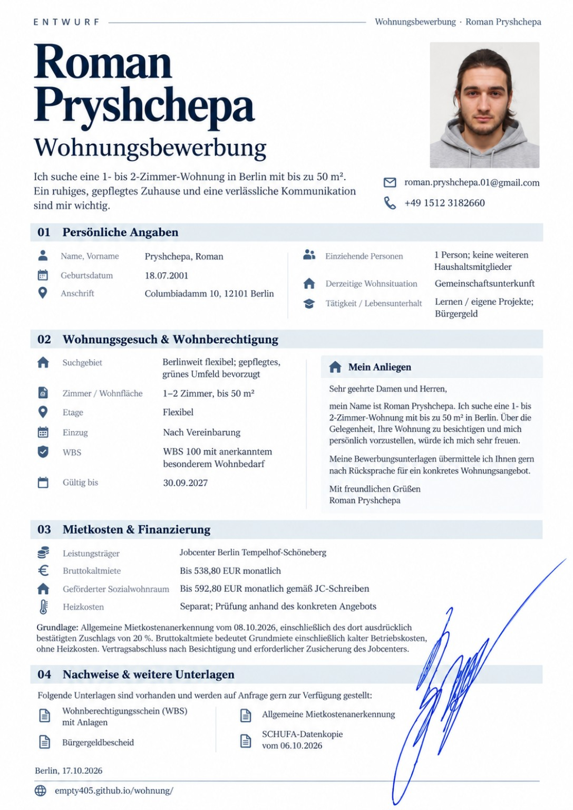

Über mich
Ein angenehmes Wohnumfeld, ein respektvolles Miteinander und eine klare Kommunikation sind mir wichtig. Ich freue mich über die Gelegenheit, Ihre Wohnung zu besichtigen und mich persönlich vorzustellen.
Ich suche ein Zuhause
in Berlin.
Ich suche eine 1- bis 2-Zimmer-Wohnung mit bis zu 50 m². Ein ruhiges, gepflegtes Zuhause und eine verlässliche Kommunikation sind mir wichtig.
Ein angenehmes Wohnumfeld, ein respektvolles Miteinander und eine klare Kommunikation sind mir wichtig. Ich freue mich über die Gelegenheit, Ihre Wohnung zu besichtigen und mich persönlich vorzustellen.
Alle Bewerbungsunterlagen liegen vor und werden Ihnen auf Anfrage gerne per E-Mail zugesandt.
WBS 100 mit anerkanntem besonderem Wohnbedarf · gültig bis 30.09.2027Ich freue mich über Ihre Nachricht und eine Einladung zur Besichtigung.
